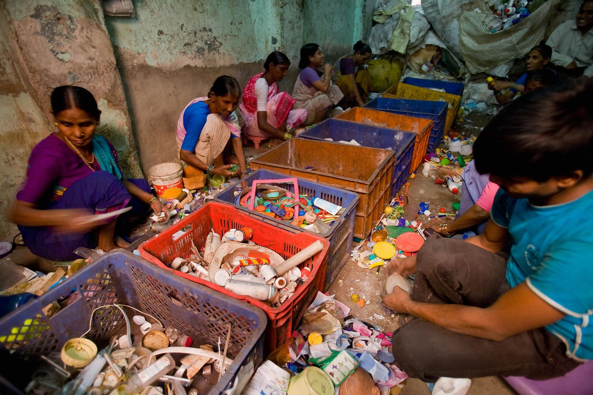
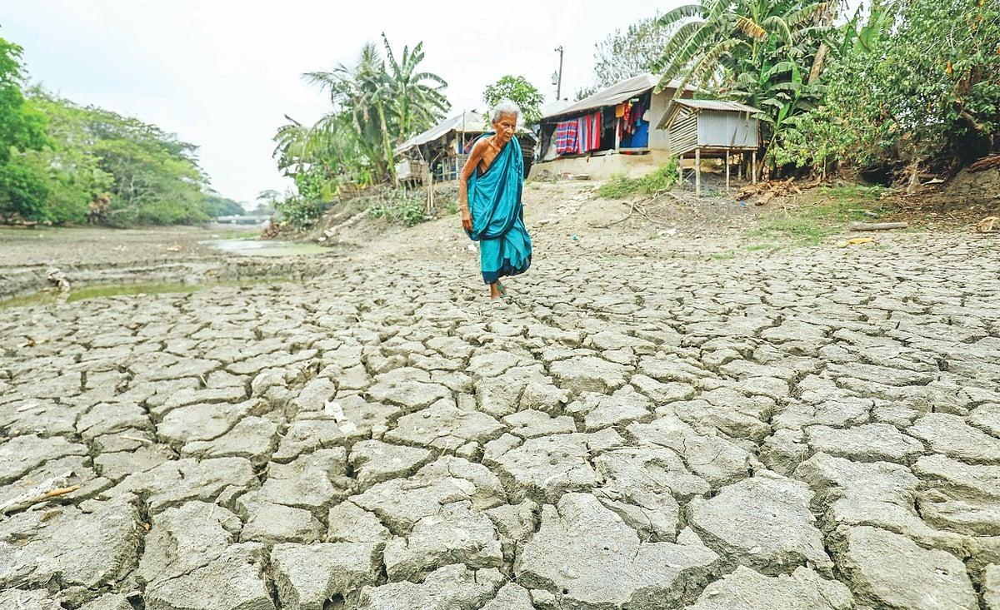
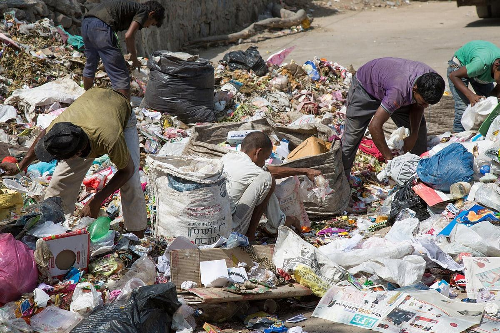
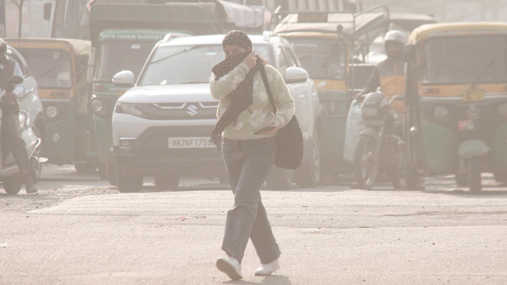
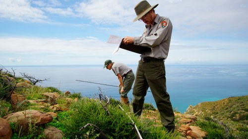
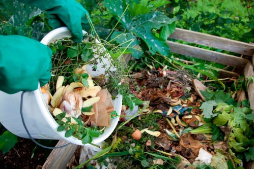
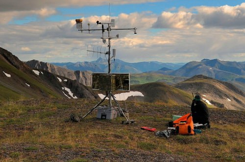
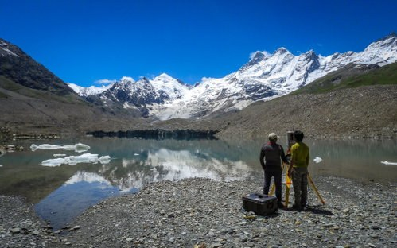

VISUAL NOTES · ENVIRONMENT · EVERYDAY LIFE
Environment, people
and the choices between.
A developing collection of visual notes and reading on sustainability: how environmental conditions meet daily life, how communities respond, and what public systems can do to support fairer and more resilient futures.
A QUESTION TO EXPLORE
Look at the relationship,
not just the image.
Sustainability is often discussed through large targets, technologies and policy commitments. It is also experienced in ordinary places: a shared growing space, a recycling worksite, a dry riverbed, a polluted street or a changing mountain environment.
This collection considers the connections between environmental change, livelihoods, public health, infrastructure, community participation and the ways these issues are represented to wider audiences. The photographs are prompts for reflection; each needs to be read alongside reliable evidence and the context in which it was made.
FIELD OF VIEW / VISUAL NOTES
Scenes that raise larger questions.

MATERIALS · WORK · DIGNITY
The people behind recycling
Material recovery depends on people, knowledge and labour as well as collection systems. Informal recycling work raises questions about safe working conditions, recognition, income security and the place of workers in circular-economy policies. A sustainable materials system should consider both resource efficiency and decent livelihoods.

WATER · CLIMATE · LIVELIHOODS
When water recedes
Cracked ground can signal water stress, but a photograph alone cannot establish the cause, duration or scale of drought. Understanding the issue requires local climate records, water-use information and community perspectives. Water scarcity can affect health, agriculture, household work and the resilience of rural livelihoods.

WASTE · CONSUMPTION · SYSTEMS
What we throw away
Waste connects individual consumption with product design, collection services, municipal infrastructure and environmental protection. Images of waste sites invite questions about where discarded materials go, who handles them, what risks workers face and how responsibility is distributed across producers, institutions and communities.

CITIES · AIR · PUBLIC HEALTH
Breathing the city
Urban air quality is shaped by transport, energy use, construction, land-use decisions and regulation. Exposure is not always evenly distributed: people who work or live near busy roads may experience different risks from those who can avoid them. Responsible reporting should pair visual accounts with monitoring data and health evidence.

OBSERVATION · COASTS · EVIDENCE
Watching changing environments
Field observation helps researchers document ecological conditions and changes over time. Coastal environments are shaped by interacting natural processes and human activity. Careful interpretation requires knowing what is being measured, where observations were taken and how they fit into longer-term evidence.

CIRCULARITY · SOIL · RESOURCES
Returning nutrients to the soil
Composting can turn some organic waste into a useful soil amendment, reducing the amount sent for disposal while returning nutrients to growing systems. Its impact depends on correct separation, management, local conditions and whether the resulting compost is safe and useful.

CLIMATE · MONITORING · DATA
Measuring a changing climate
Weather stations and other monitoring tools help build the records used to understand environmental conditions. Measurements become meaningful through consistent methods, maintenance, transparent data and careful communication of uncertainty. Good public storytelling explains what the evidence can—and cannot—show.

MOUNTAIN ENVIRONMENTS · OBSERVATION
Landscapes in transition
Mountain lakes and glacier-fed landscapes are important settings for studying environmental change. A single image captures one moment, not a trend. To understand change, visual records need to be considered with repeat observations, scientific measurements and knowledge of local ecosystems and communities.
Image note: these photographs are supplied as illustrative stock or reference images, not as evidence of Naveen's own fieldwork. They do not document a verified location, event, interview or research activity. Image source, photographer and reuse licence should be recorded for every photograph before the website is published.
HOW TO READ THESE IMAGES
Visuals need
context and evidence.
These notes are intended as starting points for further reading and discussion, not as finished research findings. A responsible approach to sustainability communication asks:
- What is visible, and what important context is outside the frame?
- Whose experiences and perspectives are represented or missing?
- What reliable data or research can verify the issue being discussed?
- How are environmental costs and benefits distributed?
- What responses are led by communities, public institutions or other stakeholders?
- How can the issue be communicated without simplifying people or places?
Future development of this collection may include critical article reviews, evidence summaries and reflections on ethical visual storytelling.